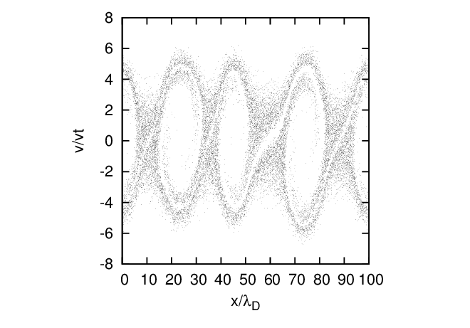

Choose an equilibrium distribution function F0(x,vx) of the following form:
|
| (133) |
where ne0 is a constant which is chosen so that ne0 = nion. It is obvious that this initial condition corresponds to an equilibrium state. It is well-known that when vb > vt, this equilibrium is unstable to an instability called the two-stream instability, which destroys the equilibrium state. In practice, the numerical noise associated with the PIC method is usually large enough to provide the initial perturbation to make this instability grow up. Thus, to see the instability, we usually do not need to manually impose any perturbation to the equilibrium. Figure 11 plots the distribution of the electron makers in the phase space (x,v) at t = 0 and t = 17.5 in a full-f simulation. Every particle marker appears as a black dot on Figure 11. Note that, since this is a full-f simulation and the markers are loaded according to the initial distribution function, statistical weights of all the marker are equal to each other and remain constant during the time evolution. Therefore more markers means more real particles. And since every particle marker appears as a black dot on Figure 11, region with denser markers appears blacker. Thus the graphics in Figure 11 can be considered as contour plots of the distribution function with the brightness indicating the value (blacker meaning higher value).

to be continued.
My Fortran code solving the two-stream instability problem is in the directory /home/yj/project_new/pic_full-f/ of my computer.